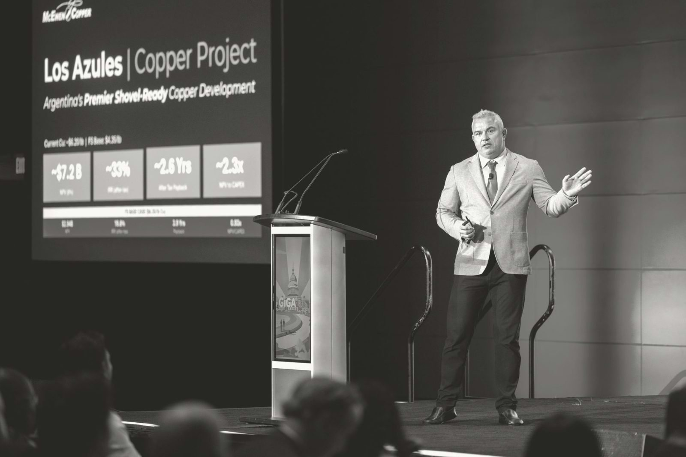

| Year | Date | City | Event | Role |
|---|---|---|---|---|
| 2026 | 28–30 Oct | Buenos Aires · Mendoza | 5th Argentina Critical Minerals Summit Upcoming | Confirmed speaker |
| 2026 | 23 Sep | Beaver Creek | Precious Metals Summit | Interview with the Investing News Network |
| 2026 | Sep | Buenos Aires | X Foro PYMES Italia–América Latina | “Minerales críticos y desarrollo federal” (critical minerals and federal development), with the governors of San Juan, Jujuy and Catamarca |
| 2026 | Sep | Argentina | Forbes Mining Summit | “En Foco”, on stage with Fernando Heredia |
| 2026 | Santiago de Chile | Argentine Embassy in Chile | “Perspectivas de la Minería en la Región” (the outlook for mining in the region), with the mining authorities of both countries | |
| 2026 | Aug | Buenos Aires | LA NACION, Minería | In conversation with José Del Rio |
| 2026 | Buenos Aires | S&P Global, Argentina Market Briefing | High-level dialogue on copper demand | |
| 2026 | 9 Jun | Washington, DC | Benchmark Giga US 26 | Copper keynote: McEwen Copper |
| 2026 | 4 Jun | Toronto | McEwen Annual Meeting | Bullpen Q&A, moderated by The Northern Miner |
| 2026 | 6–8 May | San Juan | Expo San Juan Minera · Argentina Cobre Sessions | President of the sessions; keynote; conversation with Santiago Spaltro |
| 2026 | Apr | Santiago de Chile | CESCO Week | Mining districts and new geological attractiveness |
| 2026 | 7 Apr | Buenos Aires (virtual) | Atlantic Council | Harnessing Argentina's mining sector |
| 2026 | Mar | Buenos Aires | IEFA LatAm Forum | Copper panel with Ontario's economic development minister |
| 2026 | 1 Mar | Toronto | PDAC · Argentina Mining Day | Los Azules presentation; GEMERA exploration outlook |
| 2025 | Dec | Buenos Aires | Argentina: Oro, Plata y Cobre | The state of exploration in Argentine mining |
| 2025 | 12 Nov | Buenos Aires | 4th LATAM & Argentina Critical Minerals Summit | Los Azules presentation |
| 2025 | 31 Oct | Mendoza | Argentina Mining Cuyo | Exploration panel, as president of GEMERA |
| 2025 | Oct | London | Benchmark Mineral Intelligence · LME Week | Los Azules presentation with Rob McEwen |
| 2025 | Oct | London | LME Metals Seminar | Los Azules presentation |
| 2025 | Oct | Stockholm | Nordic Funds & Mines | Presentation with Rob McEwen |
| 2025 | 1 Oct | Cologne | 76. Lateinamerika-Tag | Smart Mining, Smart Partnerships: German solutions for the next mining era in the Andes |
| 2025 | Sep | Argentina | Ámbito Debate | “La nueva era del cobre” (the new era of copper) panel |
| 2025 | Sep | Beaver Creek | Precious Metals Summit | Investor presentations with Rob McEwen |
| 2025 | Aug | Mendoza | UN Global Compact Argentina, Federal Tour | Panel on sustainable business leadership |
| 2025 | 4–5 Aug | San Juan | Argentina Cobre 2025 | Honorary President; opening session with five governors |
| 2025 | Jul | Boca Raton | Rule Symposium | Los Azules presentation with Rob McEwen |
| 2025 | 20 May | Buenos Aires | ArMinera · IDEA and CAEM | Technology, innovation and talent as drivers of mining competitiveness |
| 2025 | May | Argentina | Forbes Mining Summit | Copper, time for take-off |
| 2025 | 8 Apr | Munich | bauma | Los Azules: Smart Mining & Green Copper in Argentina's New Era |
| 2025 | 2 Mar | Toronto | PDAC · Argentina Mining | Los Azules presentation |
| 2024 | 10–11 Dec | Brussels | EU Raw Materials Week | Key speaker; bilateral meetings with EIB, IDB and KfW IPEX |
| 2024 | 4–5 Dec | Buenos Aires | Argentina: Oro, Plata y Cobre | Panel on 2024 and what comes next; exploration indicators as president of GEMERA |
| 2024 | Nov | Argentina | Ámbito Debate · Cita de CEOs | CEO panel |
| 2024 | Nov | Zurich | Precious Metals Summit | Investor presentations with Rob McEwen |
| 2024 | Nov | Hamburg | 75. Lateinamerika-Tag | Los Azules presentation; roundtable on critical-mineral supply chains |
| 2024 | 29 Oct | Buenos Aires | Argentine Investment Forum | Panel “Infrastructure for Growth: Energy, Logistics & Mining” |
| 2024 | Oct | San Juan | Fundación Pensar, regional meeting | Mining panel with the governors of San Juan, Mendoza and Jujuy in the audience |
| 2024 | 9 Oct | New York | Benchmark World Tour, hosted by Bloomberg Intelligence | Panel “Mining the Energy Transition”; Los Azules presentation |
| 2024 | Oct | Toronto | RBC Copper Developer Summit | With Rob McEwen |
| 2024 | 10 Sep | Beaver Creek | Precious Metals Summit | Thirty investor presentations with Rob McEwen |
| 2024 | 9 Sep | New York | H.C. Wainwright Global Investment Conference | Investor presentation |
| 2024 | 4 Sep | New York | Jefferies Global Metals & Mining Conference | Investor presentation |
| 2024 | Aug | Argentina | Forbes Minería Summit | On stage with Fernando Heredia |
| 2024 | 3 Jul | Argentina | CAI and the Argentine Investment Agency | “Grandes proyectos de inversión que transforman la Argentina” (large investment projects transforming Argentina) |
| 2024 | May | San Juan | Argentina Cobre, first edition | Co-chaired the International Copper Conference with Canada's ambassador; private-sector panel |
| 2024 | 3 Mar | Toronto | PDAC · Argentine Day | McEwen Copper presentation |
| 2024 | Jan | Berlin | Unlocking Synergies, Argentina–Germany | Private-sector speaker at the Embassy of Argentina |
| 2023 | 14 Nov | Zurich | Precious Metals Summit | Investor presentations with Rob McEwen |
| 2023 | Sep | Argentina | IADEM | Energy transition and sustainability |
| 2023 | 12–15 Sep | Beaver Creek | Precious Metals Summit | Investor presentations with Rob McEwen |
| 2023 | 23 May | Buenos Aires | ArMinera | Los Azules presentation |
| 2023 | 7 Mar | Toronto | PDAC · Argentina Mining | “Los Azules, Portal for Copper Development in San Juan”, with Rob McEwen |
| 2022 | 15–16 Dec | Argentina | Argentina: Oro, Plata y Cobre | Panel on sustainability and communication with society; Los Azules presentation |
| 2022 | Oct | San Juan | Expo San Juan Minera | San Juan Tierra Minera seminar: progress at Los Azules |
| 2022 | 13–16 Sep | Beaver Creek | Precious Metals Summit | More than 25 investor presentations with Rob McEwen |
| 2022 | 7 Jul | Online | McEwen Mining Annual Meeting | Los Azules presentation |
| 2022 | 22 Jun | London | Hannam & Partners, Future Copper Giants | McEwen Copper and Los Azules |
| 2022 | Jun | Canada | MSTA Canada | McEwen Copper and Los Azules |
References
- 1McEwen Inc.. Management team: Michael Meding, Managing Director, McEwen Copper. 2026. www.mcewenmining.com
- 2GlobeNewswire. McEwen Copper Announces Management Addition. 2022-02-17. www.globenewswire.com
- 3EconoJournal. Michael Meding, nuevo presidente de Gemera. 2024-10-07. econojournal.com.ar
- 4LinkedIn, Los Azules. Los Azules en Expo San Juan Minera 2026. 2026-05-07. www.linkedin.com
- 5Reuters via GBM. Cobre y cerveza: ejecutivo minero alemán abre fábrica en Argentina. 2026-05-12. gbm.com
- 6Minería & Desarrollo. Eligieron a Michael Meding de Los Azules como el Empresario Minero del Año. 2024-12-05. www.mineriaydesarrollo.com
- 7Diario de Cuyo. El vicepresidente de McEwen Copper, Michael Meding, fue elegido como 'Empresario Minero del Año 2025'. 2025-12-04. www.diariodecuyo.com.ar